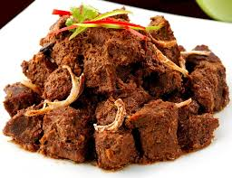
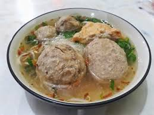

Toggle Sidebar
Toggle Sidebar
TAMPILAN AWAL MENU
Beranda
Tentang
Kontak
SELAMAT DATANG KE WIBSITE MAKANAN INDONESIA
KAMI MENYEDIANKAN MAKANAN INDONESIA SEBAGAI BERIKUT:
NASI TUMPENG
Rendang

Baso

Masakan Sunda
@Copyright Azmil Firdaus 2021